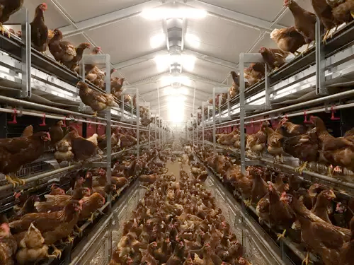

HISTORIA DEL PROYECTO
De la microbiología y las artes circenses a la tierra: cómo Keila y Miguel decidieron transformar su vida y apostar por la soberanía alimentaria en la Sierra Norte.
🔬 De los laboratorios a la Sierra Norte
Somos una pareja, Keila Martín Betancor y Miguel Tamayo Belda, nacidos en los 80 y con recorridos de vida distintos que confluyeron en los laboratorios de la Universidad Autónoma de Madrid, donde ambos realizamos la tesis doctoral en el ámbito de la microbiología ambiental.
Keila, nacida en Lanzarote, se desplazó a Granada para estudiar Biología y desde hace unos años es docente autónoma en Mercamadrid como formadora de cursos en el sector alimentario.
Miguel comenzó sus estudios en Educación Social, estudios que dejó a la mitad para iniciar su formación en artes circenses en la escuela de circo de Carampa. Esto le conduciría más adelante a interesarse de nuevo por la biología mientras estudiaba circo en la Escuela Internacional CAU en Granada, donde cursó Ciencias Ambientales y Biología.
En Madrid nos conocimos y ahora, junto con nuestros hijos e hijas humanas y no humanas, vivimos en la Sierra Norte de Madrid.

🌱 Volver a la tierra: el sector primario
Cuando nos mudamos a la Sierra Norte de Madrid, lo hicimos con la intención de encontrar un lugar donde criar a nuestra primera hija en un entorno más amable y conectado con la naturaleza que la ciudad.
Al desplazarnos a más de 80 km de Madrid capital, entendimos que no podíamos continuar vinculadas a un trabajo diario en la ciudad, así que nos planteamos varios proyectos de carácter medioambiental.
Llegado un punto, a la vista de la abundante presencia del sector terciario en el ámbito rural, nos vimos con las ganas y las fuerzas de cambiar el rumbo y hacer que todo partiese de un proyecto más vinculado a la tierra y propio del sector primario. Así surgió un proyecto enfocado en producir alimentos reales y distribuirlos en canales cortos, promoviendo la soberanía alimentaria.
🌲 La Finca: 24.000 m² de pinar protegido
La finca donde vivimos cuenta con 24.000 m² de pinar y arbustos autóctonos. Al tratarse de un terreno calificado como protegido ganadero, nos pareció el enclave perfecto para ubicar una granja de gallinas ponedoras bajo régimen 100% ecológico, en total armonía con el monte.

💪 5 años de perseverancia y banca ética
Tras muchas vueltas comenzamos con la parte burocrática y de permisos de todo este proyecto, un proceso arduo y exigente que nos ha llevado casi 5 años y un enorme esfuerzo económico y personal.
Desgraciadamente, las ayudas públicas con las que pensábamos contar (como la Ayuda a Nueva Incorporación para Jóvenes Agricultores) fueron inviables: en la Comunidad de Madrid se exigía una explotación mínima de 8.000 cabezas, un número que choca frontalmente con la dimensión humana y el bienestar animal que defendemos (actualmente 1.600 gallinas, y en un futuro como máximo 3.000). Nos negamos rotundamente a convertir el proyecto en una macroexplotación industrial.
Para hacer realidad Libreavedrio recurrimos a un crédito concedido por Fiare Banca Ética, dos créditos familiares, una donación familiar y todos nuestros fondos propios. En estos 5 años vivimos momentos difíciles en los que parecía casi imposible superar los obstáculos administrativos y financieros.